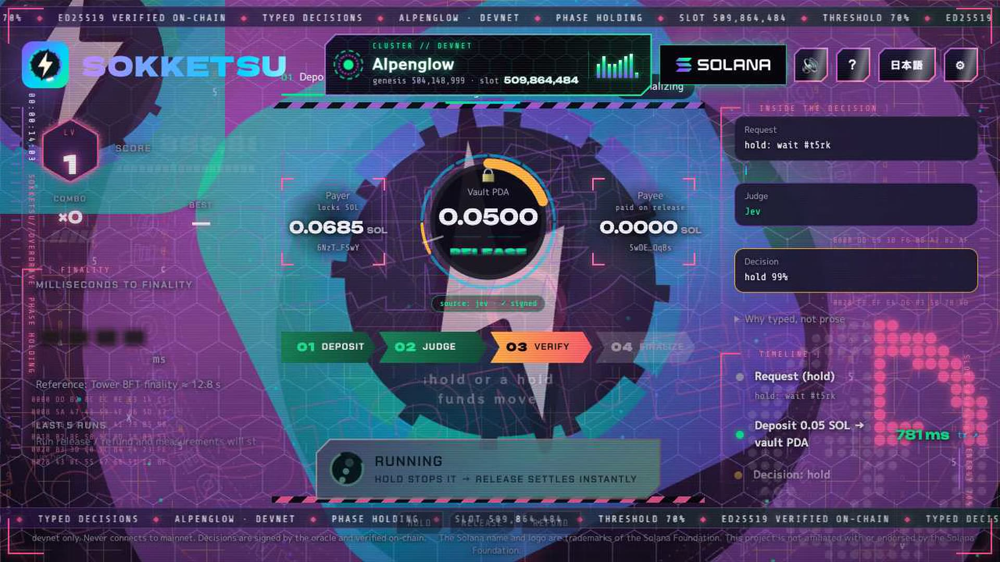
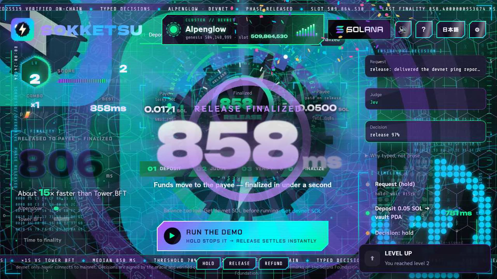

Stop agent payments with typed decisions, not generated text.
"I reviewed this request. The report appears to have been delivered and the payer seems to have approved it. That said, the scope of the approval is not fully clear… releasing the funds is probably fine, but to be safe…"
decision: "release" probability:
Tampered, re-used or unsigned decisions are rejected.
Measured on Alpenglow devnet: ms to finalized.


slot · tx · measured with WebSocket signatureSubscribe (processed / finalized)
The decision and the payment settle together. ms measured.
The program reads the Ed25519 instruction to trust a signed judgment cheaply.
5,000 lamports per signature — cheap enough for every agent payment.
| Case | Rule | Error |
|---|---|---|
| Decision from Jev | Anyone may submit it — the payer can't block a valid release | — |
| Mock decision (fallback) | Only the payer or its registered operator key | UnauthorizedSubmitter |
| No / altered / re-used signature, or changed source | Rejected before any lamport moves | MissingOracleSignature · BadOracleSignature |
| Refund / close | Anyone may send; funds always return to the payer | RefundNotAllowed · NotFinished |
Teams that escrow payment for work done by AI agents and need a release rule they can audit.
Deploy the Anchor program, call /api/judge for a signed decision, settle in one transaction.
Verify the model provider's own signature on-chain, freeze the program, then audit before mainnet.
Try it: sokketsu.pages.dev
settle
/api/judge (Jev) · /api/decide (mock)/api/fund faucet · /api/rpc
| Instruction | What it does |
|---|---|
deposit |
Payer locks SOL in the escrow PDA, with a deadline and a hash of the request |
settle |
Checks the oracle-signed decision; pays the payee only if release and probability ≥ 7000 bps |
refund |
After a signed refund ≥ 70%, or once the deadline passes — funds return to the payer |
close |
Closes a finished escrow and returns the rent to the payer |
let release = decision == DECISION_RELEASE && probability_bps >= RELEASE_THRESHOLD_BPS; // 7000
settle.// 88-byte message the oracle signs "sokketsu-decision-v3" 20 bytes escrow pubkey 32 sha256(request) 32 decision 1 release·hold·refund probability_bps 2 source 1 jev · mock
// verify_oracle_decision prev = instruction[current - 1] require prev.program == ed25519_program require pubkey == ORACLE_PUBKEY require message == decision_message( escrow, state_hash, decision, bps, source) // else BadOracleSignature
Binding the escrow and the request hash means a signature can't be re-used for another escrow or a different request.
Signatures, re-use, source tampering, submitter rules, refund and close — run in CI.
Judge, oracle signing, ed25519 instruction building, faucet and RPC fallback.
Every number in the videos comes from a captured devnet transaction.